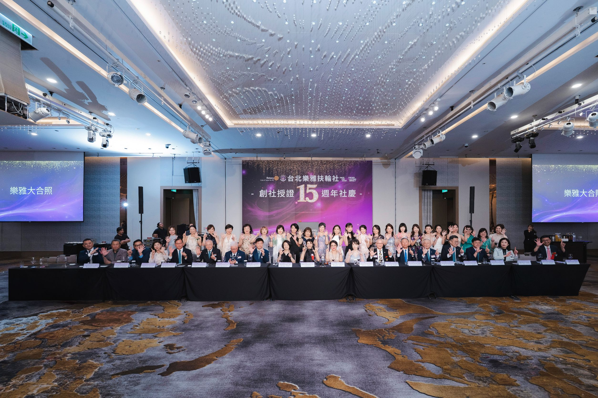

如果是幾年前的我，有人問我什麼是扶輪，我大概只會笑著回答：「就是一群朋友聚在一起聯誼、做公益吧」直到真正走進扶輪，甚至有幸擔任社長，我才發現，原來扶輪遠比我想像的更深、更廣。也終於明白「扶輪社友」 和「扶輪人」完全是不同的箇中滋味。今年國際扶輪世界年會在台灣，我看見的已經不止是一次次的服務活動，而是一群來自不同國家、不同文化的人，因為共同的信念聚在一起，用行動回應世界的需要。扶輪所推動的七大焦點領域，不只是口號，而是每天都有人默默在世界各地實踐承諾。也正因如此，我更深刻體會到「超我服務」真正的意義。今年世界年會在台北舉辦，對台灣而言是一件值得驕傲的大事。世界這麼大，而來自全球的扶輪人因著這場盛會齊聚台灣，親眼看見這片土地的溫暖與美好。近年來，台灣因科技與AI讓世界看見我們的實力；除此之外，世界會記住的，還有台灣人的善良、熱情、韌性，以及願意為他人付出的精神。這些價值都與扶輪的理念不謀而合。
回首這一年，扶輪帶給我的，不只是服務的機會，更改變了我看待世界的角度。我相信，每一次真誠的付出，都能成為改變世界的一份力量；而每一次跨越國界的交流，也都讓彼此更加理解與尊重。身為台灣扶輪人，更是今年的社長，我心中充滿感恩，也感到無比榮幸在D3523 DG Jenny 所領導的團隊中做服務 ，未來我也會帶著這份感動繼續與更多扶輪夥伴攜手同行持續和世界一起各地發光。
世界年會雖然已經落幕，但我相信，真正留下來的，不是活動本身，而是每一位扶輪人心中那份願意付出的初心。願我們都帶著這份感動繼續前行，讓世界因扶輪而更美好，
台灣也因扶輪而更加耀眼。
